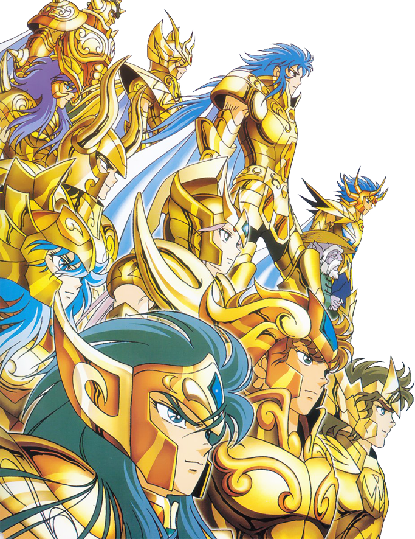

Historia
El argumento de la serie se centra en la historia de un grupo de jóvenes guerreros denominados Saints (Santos, o Caballeros en varias traducciones), quienes luchan por proteger a la diosa griega Athena de las fuerzas del mal. Para luchar, los Saints utilizan una energía de su interior denominada Cosmos, además de sus puños y armaduras que les sirven de protección y que además están inspiradas en constelaciones o seres de la mitología griega.